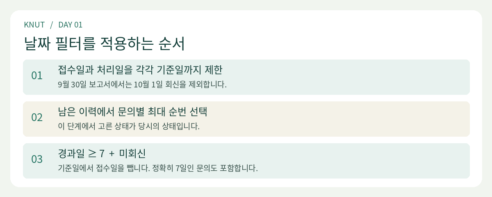
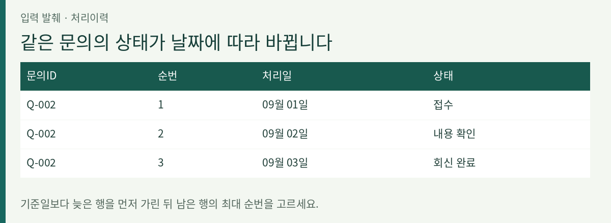
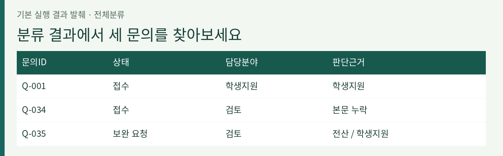
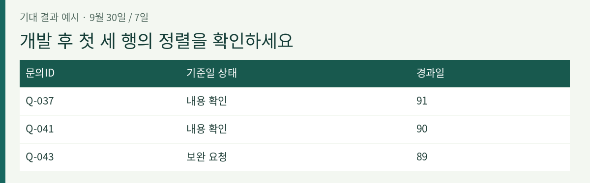

1일차 · 실습장기 미회신 목록 만들기

날짜 필터를 적용하는 순서 · 단계 안내도먼저 VS Code 터미널에서 아래 명령을 실행하세요. results/01_문의분류결과.xlsx을 열어 현재 기능을 확인합니다.
py day1.py

입력 시트에서 접수부터 회신까지 확인 · 그림을 누르면 확대됩니다.
기본 프로그램에서 확인할 문의별 결과 · 그림을 누르면 확대됩니다.행정팀 요청 — “지난달 말 기준으로 일주일이 지나도록 회신하지 못한 문의를 찾고 싶습니다. 당시 가장 오래 기다린 문의부터 보여주세요. 우리 팀에서는 다음 달부터 기준을 10일로 바꿀 수도 있어요.”
출발점 — day1.py를 실행해 결과 엑셀의 ‘전체분류’와 ‘미회신_검토후보’를 비교하세요. 기존 검토후보는 분류하기 어려운 건을 모읍니다. 추가할 목록은 모든 분야에서 오래 기다린 건을 찾습니다.
개발할 기능
- 기준일과 대기 일수를 한 곳에서 바꿀 수 있게 하세요. 기본값은 2026-09-30, 7일입니다. 코드 상단에 두 설정값을 두어도 됩니다.
- 기준일 당일까지 접수한 문의와 그날까지 발생한 처리 이력을 읽으세요. 문의별로 남은 이력 중 순번이 가장 큰 행을 당시 상태로 사용하세요.
- 경과일은 달력 날짜의 차이로 계산합니다. 당일은 0일입니다. 기준일 상태가 ‘회신 완료’인 건은 제외하고, 경과일이 설정값 이상인 건을 포함하세요.
- 기존 결과 엑셀에 ‘장기미회신’ 시트를 추가하세요. 문의ID, 접수일, 기준일 상태, 경과일, 문의내용을 표시합니다. 오래된 순서로 정렬하고 동률이면 문의ID 오름차순으로 정리하세요.
무료 GPT에 전달할 맥락 — day1.py, 두 원본 시트의 열 이름, 같은 문의ID의 처리 이력 2~3줄을 복사하세요. “현재 코드는 최신 상태를 언제 고르나요? 과거 날짜의 대기 목록을 만들려면 어느 단계에서 날짜를 제한해야 하나요?”라고 물어보세요. 답을 검토하고, 확정한 판단 순서를 자신의 말로 Copilot에 전달하세요.
직접 검증 — 기준일을 9월 30일로 두고 7일과 8일 결과를 비교하세요. 정확히 7일 기다린 건은 어느 쪽에 남습니까? 기준일을 9월 15일로 앞당겨 해당 날짜 이후 접수나 회신이 과거 목록에 영향을 주는지도 확인하세요.

확장 후 비교할 행과 정렬 순서 · 그림을 누르면 확대됩니다.변경 확인과 제출
결과 파일을 닫고 다시 실행하세요. 기본 결과와 추가된 기능을 모두 확인한 뒤 변경한 코드, 생성한 파일과 테스트 기록을 보관하세요. Git으로 복제한 폴더에서는 다음 명령으로 수정 범위를 확인할 수 있습니다.
git diff -- day1.py
무료 GPT 지시문 · Copilot으로 수정하고 검토하기